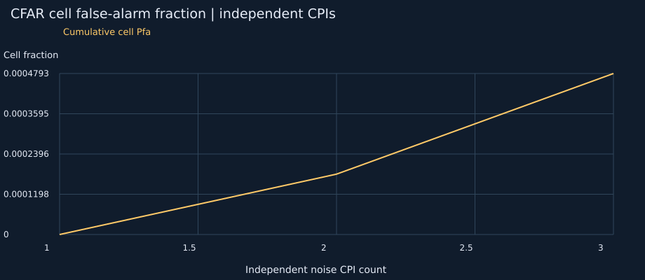
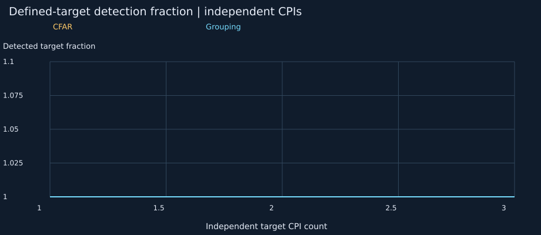

گزارش بر پایه ورودی بازخوانیشده و خروجی واقعی UART تهیه شده است. هیچ خروجی نرمافزاری جای خروجی FPGA قرار نگرفته است.
| وضعیت اجرا | آزمون تکمیلشده / برنامه | زمان اجرا s |
|---|---|---|
| COMPLETE | 12 / 12 | 215.209 |
نتیجه برابری با مرجع Fixed، عملکرد تفکیک دو هدف و پذیرش آماری سه موضوع جدا هستند. عدم تفکیک دو هدف در هر دو مسیر، خطای پیادهسازی معرفی نمیشود.
تزریق این بخش: Power حاصل از FFT نرمافزاری Float. کلاسترینگ از ماسک واقعی CFAR سختافزاری تغذیه میشود. این اعداد Pd/Pfa کل زنجیره خام نیستند.
| معیار | برآورد | فاصله اطمینان ۹۵٪ / توضیح |
|---|---|---|
| Pfa سلولی CFAR | 0.000479272 | [0, 0.78458]؛ کران محافظهکارانه بر پایه CPI |
| احتمال وجود حداقل یک هشدار در CPI بدون هدف | 0.666667 | [0.0942993, 0.991596] |
| میانگین کلاستر کاذب در هر CPI | 1.33333 | این کمیت احتمال سلولی نیست |
| Pd هدف تعریفشده در CFAR | 1 | [0.292402, 1] |
| Pd پس از کلاسترینگ | 1 | [0.292402, 1] |
| تعداد سلول معتبر در هر CPI | 2782 | سلولهای همبسته، آزمایش مستقل شمرده نشدند |


هر CPI نویز مستقل دارد؛ سلولهای یک CPI مستقل فرض نشدهاند. بازه Pfa سلولی از کران محافظهکارانه CPIهای مستقل محاسبه شده و ممکن است بسیار باز باشد. یک مقدار کم بدون فاصله اطمینان کافی، پذیرش آماری نیست.
سناریوی نویز بدون هدف با RMS نویز 0.02 برای آزمون از خروجی Power تزریق و خروجی CFAR برداشت شد. با مرجع Python Fixed مقایسه شد: 0 تصمیم CFAR متفاوت، 0 تصمیم اضافی و 0 تصمیم گمشده ثبت شد. با مرجع MATLAB Fixed مقایسه شد: 0 تصمیم CFAR متفاوت، 0 تصمیم اضافی و 0 تصمیم گمشده ثبت شد. ورودی شامل 32 ردیف بین داپلر بود.
خروجی FPGA و MATLAB Fixed در صفحه برد–سرعت؛ decision 0/1 با مقیاس رنگ مشترک و راهنمای رنگی. دامنه و توان در مقیاس عددی نرمالشده سامانه هستند.
سناریوی نویز بدون هدف با RMS نویز 0.02 برای آزمون از خروجی Power تزریق و خروجی CFAR برداشت شد. با مرجع Python Fixed مقایسه شد: 0 تصمیم CFAR متفاوت، 0 تصمیم اضافی و 0 تصمیم گمشده ثبت شد. با مرجع MATLAB Fixed مقایسه شد: 0 تصمیم CFAR متفاوت، 0 تصمیم اضافی و 0 تصمیم گمشده ثبت شد. ورودی شامل 32 ردیف بین داپلر بود.
خروجی FPGA و MATLAB Fixed در صفحه برد–سرعت؛ decision 0/1 با مقیاس رنگ مشترک و راهنمای رنگی. دامنه و توان در مقیاس عددی نرمالشده سامانه هستند.
سناریوی نویز بدون هدف با RMS نویز 0.02 برای آزمون از خروجی Power تزریق و خروجی CFAR برداشت شد. با مرجع Python Fixed مقایسه شد: 0 تصمیم CFAR متفاوت، 0 تصمیم اضافی و 0 تصمیم گمشده ثبت شد. با مرجع MATLAB Fixed مقایسه شد: 0 تصمیم CFAR متفاوت، 0 تصمیم اضافی و 0 تصمیم گمشده ثبت شد. ورودی شامل 32 ردیف بین داپلر بود.
خروجی FPGA و MATLAB Fixed در صفحه برد–سرعت؛ decision 0/1 با مقیاس رنگ مشترک و راهنمای رنگی. دامنه و توان در مقیاس عددی نرمالشده سامانه هستند.
1 هدف در بردهای 5995.85 متر و با سرعتهای 2.8125 متر بر ثانیه با RMS نویز 0.02 برای آزمون از خروجی Power تزریق و خروجی CFAR برداشت شد. با مرجع Python Fixed مقایسه شد: 0 تصمیم CFAR متفاوت، 0 تصمیم اضافی و 0 تصمیم گمشده ثبت شد. با مرجع MATLAB Fixed مقایسه شد: 0 تصمیم CFAR متفاوت، 0 تصمیم اضافی و 0 تصمیم گمشده ثبت شد. ورودی شامل 32 ردیف بین داپلر بود.
خروجی FPGA و MATLAB Fixed در صفحه برد–سرعت؛ decision 0/1 با مقیاس رنگ مشترک و راهنمای رنگی. دامنه و توان در مقیاس عددی نرمالشده سامانه هستند.
1 هدف در بردهای 5995.85 متر و با سرعتهای 2.8125 متر بر ثانیه با RMS نویز 0.02 برای آزمون از خروجی Power تزریق و خروجی CFAR برداشت شد. با مرجع Python Fixed مقایسه شد: 0 تصمیم CFAR متفاوت، 0 تصمیم اضافی و 0 تصمیم گمشده ثبت شد. با مرجع MATLAB Fixed مقایسه شد: 0 تصمیم CFAR متفاوت، 0 تصمیم اضافی و 0 تصمیم گمشده ثبت شد. ورودی شامل 32 ردیف بین داپلر بود.
خروجی FPGA و MATLAB Fixed در صفحه برد–سرعت؛ decision 0/1 با مقیاس رنگ مشترک و راهنمای رنگی. دامنه و توان در مقیاس عددی نرمالشده سامانه هستند.
1 هدف در بردهای 5995.85 متر و با سرعتهای 2.8125 متر بر ثانیه با RMS نویز 0.02 برای آزمون از خروجی Power تزریق و خروجی CFAR برداشت شد. با مرجع Python Fixed مقایسه شد: 0 تصمیم CFAR متفاوت، 0 تصمیم اضافی و 0 تصمیم گمشده ثبت شد. با مرجع MATLAB Fixed مقایسه شد: 0 تصمیم CFAR متفاوت، 0 تصمیم اضافی و 0 تصمیم گمشده ثبت شد. ورودی شامل 32 ردیف بین داپلر بود.
خروجی FPGA و MATLAB Fixed در صفحه برد–سرعت؛ decision 0/1 با مقیاس رنگ مشترک و راهنمای رنگی. دامنه و توان در مقیاس عددی نرمالشده سامانه هستند.
سناریوی نویز بدون هدف با RMS نویز 0.02 برای آزمون از خروجی CFAR تزریق و خروجی کلاسترینگ برداشت شد. با مرجع Python Fixed مقایسه شد: 0 کلاستر سختافزاری در برابر 0 کلاستر مرجع ثبت شد؛ امضای رکوردها برابر بود. با مرجع MATLAB Fixed مقایسه شد: 0 کلاستر سختافزاری در برابر 0 کلاستر مرجع ثبت شد؛ امضای رکوردها برابر بود. ورودی شامل 32 ردیف بین داپلر بود.
0 هدف از 0 هدف با کلاسترها تطبیق یافت؛ 0 کلاستر بدون تطبیق باقی ماند.
خروجی FPGA و MATLAB Fixed در صفحه برد–سرعت؛ cluster peak 0/1 با مقیاس رنگ مشترک و راهنمای رنگی. دامنه و توان در مقیاس عددی نرمالشده سامانه هستند.
سناریوی نویز بدون هدف با RMS نویز 0.02 برای آزمون از خروجی CFAR تزریق و خروجی کلاسترینگ برداشت شد. با مرجع Python Fixed مقایسه شد: 1 کلاستر سختافزاری در برابر 1 کلاستر مرجع ثبت شد؛ امضای رکوردها برابر بود. با مرجع MATLAB Fixed مقایسه شد: 1 کلاستر سختافزاری در برابر 1 کلاستر مرجع ثبت شد؛ امضای رکوردها برابر بود. ورودی شامل 32 ردیف بین داپلر بود.
0 هدف از 0 هدف با کلاسترها تطبیق یافت؛ 1 کلاستر بدون تطبیق باقی ماند.
خروجی FPGA و MATLAB Fixed در صفحه برد–سرعت؛ cluster peak 0/1 با مقیاس رنگ مشترک و راهنمای رنگی. دامنه و توان در مقیاس عددی نرمالشده سامانه هستند.
سناریوی نویز بدون هدف با RMS نویز 0.02 برای آزمون از خروجی CFAR تزریق و خروجی کلاسترینگ برداشت شد. با مرجع Python Fixed مقایسه شد: 3 کلاستر سختافزاری در برابر 3 کلاستر مرجع ثبت شد؛ امضای رکوردها برابر بود. با مرجع MATLAB Fixed مقایسه شد: 3 کلاستر سختافزاری در برابر 3 کلاستر مرجع ثبت شد؛ امضای رکوردها برابر بود. ورودی شامل 32 ردیف بین داپلر بود.
0 هدف از 0 هدف با کلاسترها تطبیق یافت؛ 3 کلاستر بدون تطبیق باقی ماند.
خروجی FPGA و MATLAB Fixed در صفحه برد–سرعت؛ cluster peak 0/1 با مقیاس رنگ مشترک و راهنمای رنگی. دامنه و توان در مقیاس عددی نرمالشده سامانه هستند.
1 هدف در بردهای 5995.85 متر و با سرعتهای 2.8125 متر بر ثانیه با RMS نویز 0.02 برای آزمون از خروجی CFAR تزریق و خروجی کلاسترینگ برداشت شد. با مرجع Python Fixed مقایسه شد: 7 کلاستر سختافزاری در برابر 7 کلاستر مرجع ثبت شد؛ امضای رکوردها برابر بود. با مرجع MATLAB Fixed مقایسه شد: 7 کلاستر سختافزاری در برابر 7 کلاستر مرجع ثبت شد؛ امضای رکوردها برابر بود. ورودی شامل 32 ردیف بین داپلر بود.
1 هدف از 1 هدف با کلاسترها تطبیق یافت؛ 6 کلاستر بدون تطبیق باقی ماند.
خروجی FPGA و MATLAB Fixed در صفحه برد–سرعت؛ cluster peak 0/1 با مقیاس رنگ مشترک و راهنمای رنگی. دامنه و توان در مقیاس عددی نرمالشده سامانه هستند.
1 هدف در بردهای 5995.85 متر و با سرعتهای 2.8125 متر بر ثانیه با RMS نویز 0.02 برای آزمون از خروجی CFAR تزریق و خروجی کلاسترینگ برداشت شد. با مرجع Python Fixed مقایسه شد: 5 کلاستر سختافزاری در برابر 5 کلاستر مرجع ثبت شد؛ امضای رکوردها برابر بود. با مرجع MATLAB Fixed مقایسه شد: 5 کلاستر سختافزاری در برابر 5 کلاستر مرجع ثبت شد؛ امضای رکوردها برابر بود. ورودی شامل 32 ردیف بین داپلر بود.
1 هدف از 1 هدف با کلاسترها تطبیق یافت؛ 4 کلاستر بدون تطبیق باقی ماند.
خروجی FPGA و MATLAB Fixed در صفحه برد–سرعت؛ cluster peak 0/1 با مقیاس رنگ مشترک و راهنمای رنگی. دامنه و توان در مقیاس عددی نرمالشده سامانه هستند.
1 هدف در بردهای 5995.85 متر و با سرعتهای 2.8125 متر بر ثانیه با RMS نویز 0.02 برای آزمون از خروجی CFAR تزریق و خروجی کلاسترینگ برداشت شد. با مرجع Python Fixed مقایسه شد: 6 کلاستر سختافزاری در برابر 6 کلاستر مرجع ثبت شد؛ امضای رکوردها برابر بود. با مرجع MATLAB Fixed مقایسه شد: 6 کلاستر سختافزاری در برابر 6 کلاستر مرجع ثبت شد؛ امضای رکوردها برابر بود. ورودی شامل 32 ردیف بین داپلر بود.
1 هدف از 1 هدف با کلاسترها تطبیق یافت؛ 5 کلاستر بدون تطبیق باقی ماند.
خروجی FPGA و MATLAB Fixed در صفحه برد–سرعت؛ cluster peak 0/1 با مقیاس رنگ مشترک و راهنمای رنگی. دامنه و توان در مقیاس عددی نرمالشده سامانه هستند.
دامنهها نرمالشدهاند، توان وات نیست. هدفها در مدل stop-and-hop هستند. پنجره CFAR معتبر 107×26 سلول و ناحیه داپلر طبیعی 3..28 است؛ هدف ساکن و بسیار کند الزاماً در این ناحیه قرار نمیگیرد. آزمون MTI ساکن برای اندازهگیری تضعیف است، نه انتظار آشکارسازی نهایی. فایلهای JSON/NPZ کنار گزارش، داده و شواهد دقیق را نگه میدارند.